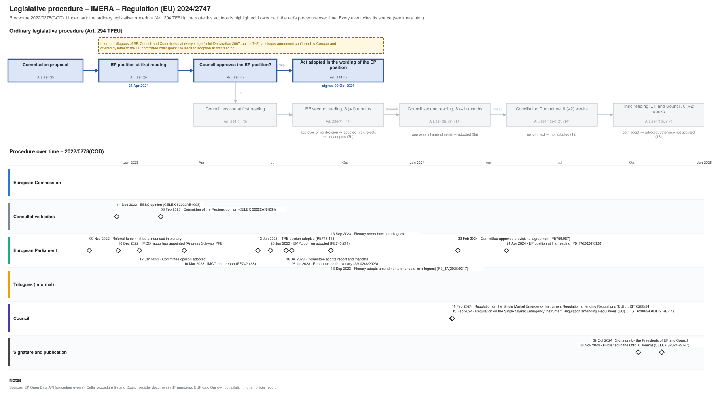

← Regulation timeline › IMERA › Legislative procedure · All procedures
Procedure 2022/0278(COD), completed. Drawing: SVG · PNG · PDF (A3) · draw.io · Page as Markdown: imera.md
| Stage | Completed, published 08 Nov 2024 |
|---|---|
| Latest activity | 08 Nov 2024 · Signature and publication: Published in the Official Journal (CELEX 32024R2747) |

| Date | Actor | Event | Document | Source |
|---|---|---|---|---|
| 2022-11-09 | European Parliament | Referral to committee announced in plenary | EP procedure file | EP Open Data API, procedure 2022-0278 (REFERRAL) |
| 2022-12-14 | Consultative bodies | EESC opinion | CELEX 52022AE4098 | Cellar procedure file 2022/278 |
| 2022-12-16 | European Parliament | IMCO rapporteur appointed (Andreas Schwab, PPE) | EP procedure file | EP Open Data API, procedure 2022-0278 (participation RAPPORTEUR) |
| 2023-01-12 | European Parliament | Committee opinion adopted | EP procedure file | EP Open Data API, procedure 2022-0278 (COMMITTEE_ADOPTING_OPINION) |
| 2023-02-08 | Consultative bodies | Committee of the Regions opinion | CELEX 52022AR4234 | Cellar procedure file 2022/278 |
| 2023-03-10 | European Parliament | IMCO draft report | PE742.468 | EP Open Data API, procedure 2022-0278 (COMMITTEE_TABLING_REPORT) |
| 2023-06-12 | European Parliament | ITRE opinion adopted | PE745.415 | EP Open Data API, procedure 2022-0278 (COMMITTEE_ADOPTING_OPINION) |
| 2023-06-28 | European Parliament | EMPL opinion adopted | PE745.211 | EP Open Data API, procedure 2022-0278 (COMMITTEE_ADOPTING_OPINION) |
| 2023-07-18 | European Parliament | Committee adopts report and mandate | EP procedure file | EP Open Data API, procedure 2022-0278 (COMMITTEE_ADOPTING_REPORT) |
| 2023-07-25 | European Parliament | Report tabled for plenary | A9-0246/2023 | EP Open Data API, procedure 2022-0278 (TABLING_PLENARY) |
| 2023-09-13 | European Parliament | Plenary refers back for trilogues | EP procedure file | EP Open Data API, procedure 2022-0278 (PLENARY_REFER_COMMITTEE_INTERINSTITUTIONAL_NEGOTIATIONS) |
| 2023-09-13 | European Parliament | Plenary adopts amendments (mandate for trilogues) | P9_TA(2023)0317 | EP Open Data API, procedure 2022-0278 (PLENARY_AMEND) |
| 2024-02-14 | Council | Regulation on the Single Market Emergency Instrument Regulation amending Regulations (EU) … | ST 6288/24 | Cellar procedure file 2022/278 (Council register) |
| 2024-02-14 | Council | Regulation on the Single Market Emergency Instrument Regulation amending Regulations (EU) … | ST 6288/24 ADD 1 | Cellar procedure file 2022/278 (Council register) |
| 2024-02-14 | Council | Regulation on the Single Market Emergency Instrument Regulation amending Regulations (EU) … | ST 6288/24 ADD 3 | Cellar procedure file 2022/278 (Council register) |
| 2024-02-15 | Council | Regulation on the Single Market Emergency Instrument Regulation amending Regulations (EU) … | ST 6288/24 ADD 2 REV 1 | Cellar procedure file 2022/278 (Council register) |
| 2024-02-22 | European Parliament | Committee approves provisional agreement | PE759.087 | EP Open Data API, procedure 2022-0278 (COMMITTEE_APPROVE_PROVISIONAL_AGREEMENT) |
| 2024-04-24 | European Parliament | EP position at first reading (Art. 294(3) TFEU) | P9_TA(2024)0320 | EP Open Data API, procedure 2022-0278 (PLENARY_AMEND_PROPOSAL) |
| 2024-10-09 | Signature and publication | Signature by the Presidents of EP and Council | EP procedure file | EP Open Data API, procedure 2022-0278 (SIGNATURE) |
| 2024-11-08 | Signature and publication | Published in the Official Journal | CELEX 32024R2747 · en.md de.md | EP Open Data API, procedure 2022-0278 (PUBLICATION_OFFICIAL_JOURNAL) |
| Date | Document | Kind | Subject | Text |
|---|---|---|---|---|
| 2022-12-14 | CELEX 52022AE4098 | opinion | Opinion of the European Economic and Social Committee on: (a) Proposal for a regulation of the European Parliament and of the Council establishing a Single … | – |
| 2023-02-08 | CELEX 52022AR4234 | opinion | Opinion of the European Committee of the Regions on the Single Market Emergency Instrument | – |
| 2023-03-10 | PE742.468 | ep-draft-report | DRAFT REPORT on the proposal for a regulation of the European Parliament and of the Council establishing a Single Market emergency instrument and repealing … | – |
| 2023-03-10 | PE745.211 | ep-draft-opinion | DRAFT OPINION on the proposal for a regulation of the European Parliament and of the Council establishing a Single Market emergency instrument and repealing … | – |
| 2023-03-29 | PE745.415 | ep-draft-opinion | DRAFT OPINION on the proposal for a regulation of the European Parliament and of the Council establishing a Single Market emergency instrument and repealing … | – |
| 2023-06-15 | PE745.415 | ep-opinion | OPINION on the proposal for a regulation of the European Parliament and of the Council establishing a Single Market emergency instrument and repealing Council … | – |
| 2023-07-03 | PE745.211 | ep-opinion | OPINION on the proposal for a regulation of the European Parliament and of the Council establishing a Single Market emergency instrument and repealing Council … | – |
| 2023-07-25 | A9-0246/2023 | ep-report | REPORT on the proposal for a regulation of the European Parliament and of the Council establishing a Single Market emergency instrument and repealing Council … | – |
| 2023-09-13 | P9_TA(2023)0317 | ep-position | Single market emergency instrument | – |
| 2024-02-14 | ST 6288/24 | agreed-text | Regulation on the Single Market Emergency Instrument Regulation amending Regulations (EU) 2016/424, (EU) 2016/425, (EU) 2016/426, (EU) 2019/1009 and (EU) No … | – |
| 2024-02-14 | ST 6288/24 ADD 1 | agreed-text | Regulation on the Single Market Emergency Instrument Regulation amending Regulations (EU) 2016/424, (EU) 2016/425, (EU) 2016/426, (EU) 2019/1009 and (EU) No … | – |
| 2024-02-14 | ST 6288/24 ADD 3 | agreed-text | Regulation on the Single Market Emergency Instrument Regulation amending Regulations (EU) 2016/424, (EU) 2016/425, (EU) 2016/426, (EU) 2019/1009 and (EU) No … | – |
| 2024-02-15 | ST 6288/24 ADD 2 REV 1 | agreed-text | Regulation on the Single Market Emergency Instrument Regulation amending Regulations (EU) 2016/424, (EU) 2016/425, (EU) 2016/426, (EU) 2019/1009 and (EU) No … | – |
| 2024-02-16 | PE759.087 | agreed-text | PROVISIONAL AGREEMENT RESULTING FROM INTERINSTITUTIONAL NEGOTIATIONS Proposal for a regulation of the European Parliament and of the Council on Establishing a … | – |
| 2024-04-24 | P9_TA(2024)0320 | ep-position | Single Market Emergency Instrument | – |
Unofficial Markdown conversions for reading, searching and project folders; only the official document is authentic. "Read" opens the rendered text on GitHub, where a link to a provision (#art-13, #rec-12, #annex-i) jumps to it.
| Date | Stage | Document | Markdown | Read |
|---|---|---|---|---|
| 2024-11-08 | oj | CELEX 32024R2747 | en de | GitHub |
Comitology committees of Member State representatives give opinions on draft implementing acts (Regulation (EU) No 182/2011); expert groups advise the Commission on delegated acts, guidance and implementation. Meetings and documents as published in the Comitology Register and the Register of Commission expert groups, from 2024 on.
Comitology committee C131800, GROW; urgent examination procedure (Art. 5 and 8 of Regulation (EU) No 182/2011); examination procedure (Art. 5, 6 and 7 of Regulation (EU) No 182/2011).
No meetings listed.